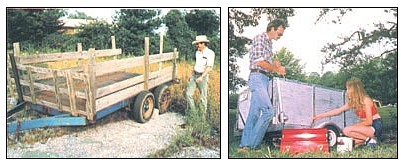
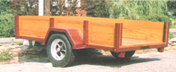

Whether you live "uptown" or "down home", you can profit from this part-time business:
With automobile and fuel prices climbing while the average American's disposable income shrinks, the cars and pickup trucks that we buy are, for the most part, getting smaller. However, our carrying capacity requirements - whether for work or recreation - remain as large as ever. That being the case, it's no wonder that the market for moderately priced, reconditioned utility trailers has never been better.
If you're already a seasoned bargain hunter, scrounger, and barterer (or are willing to learn how to become one), you can get in on the trailer boom with a minimum investment and expect returns of 25%, 50%, or even 100% on your initial outlay. Simply use your skills to find a suitable "reclamation project", and then to acquire building materials . . . accumulate tires and other spare parts you may find useful . . . and arrange for any services (such as welding or metal cutting) that you can't perform yourself. Reconditioning used trailers isn't especially difficult, but it does require that you be organized - and systematically opportunistic - in order to reap the best returns for your time and money.
KNOW YOUR MARKET
I'm fortunate to live in a west central Oklahoma town that boasts a four-year college and is surrounded by farm country. The available mixture of urban, rural, and student markets almost guarantees that I'll find a customer for any reconditioned trailer I have to sell . . . if I take the time to understand what each group of buyers will be looking for.
Take the students, for instance. Just as the turkey buzzards return to Hinckley, Ohio every spring, these scholars arrive in late August and hustle home in mid-May. So at summer's end I buy the trailers that the newly resident undergraduates (who can always use extra cash) no longer want . . . and in the spring I have little trouble finding migrating collegians in desperate need of conveyances to haul their possessions (which seem to increase magically over the course of the school year). For the most part, students favor two-wheelers that are lightweight and inexpensive, with 1- to 4-foot sides and no extras . . . something, in other words, to do little more than get their goods and chattels home.
My other groups of customers are more choosy. Farmers and stockbreeders, for example, tend to want sturdy, no-frills carts capable of standing up to the punishment of carrying agricultural equipment, feed, and fertilizer. In my experience, such individuals are particularly eager to buy low-profile flatbeds that measure 4 to 6 feet wide and 10 to 15 feet long. And most country buyers expect to see good rubber on the ground and to have a spare tire thrown in with the deal.
Townsfolk, on the other hand, seem to be more concerned with the cosmetic aspect of a vehicle (although there are, of course, exceptions to all of these general rules). City and suburb dwellers are usually willing to pay top dollar for trailers they can use to haul lawn clippings, furniture, motorcycles, riding mowers, and such . . . but will often ignore a bargain if it doesn't have an attractive two-tone paint job. They also generally prefer light- to medium-weight trailers that look sharp and have fenders, taillights, easy-operating ball hitches, and locking tailgates.
Finally, there's a category of customers that I call the "hobby haulers". These people use trailers to transport everything from artworks to motorized water skis, and are often willing to pay premium prices to get exactly what they want. They also tend to be very demanding. In fact, such buyers are likely to request a custom paint scheme to match an already owned car or truck, or any of a number of other frills that can run into lots of time and money on your part . . . especially if you don't have the skills and shop equipment necessary to tackle tasks like welding and automotive-type spray painting. Since I recondition trailers primarily as a hobby, I pass up the hobby haulers . . . but these individuals could represent a lucrative market for anyone who can take the time to satisfy their whims.
FINDING AND BUYING USED TRAILERS
Once you know your market, you can go about finding the raw material . . . that is, trailers that can be readily put into shape. I locate most of my fixer-uppers by prowling the streets and alleys around town, and by keeping my eyes open when driving along country roads. If I happen to spot a likely candidate, I simply stop and ask whether the owner is interested in selling. (Auctions make good hunting grounds, too, and are also economical sources of the materials - such as paint and plywood - that you'll need to prepare your wares for resale.)
When examining a prospect prior to making an offer on it, be thorough. In order to be sure of a reasonable profit, you must learn to shy away from old broken-down "dogs" that'll require too much labor to be worth your while. (Just how much repair work is too much will, of course, depend upon your talents and upon just how the hobby and business aspects of your enterprise balance out.) I make sure that any trailer I purchase has a good solid floor that isn't rusted or rotted through . . . sides that can be easily strengthened if they aren't sound already . . . and bearings and axles that are in good working order.
Try to avoid "boxes" built on the converted back axles of rear-wheel-drive cars or trucks, since the differential-equipped units are heavier than the front shafts are, and more likely to have gear or seal problems as well. Furthermore, if your prospective purchase has metal sides, they should be in fairly good repair, because body work can be both expensive and time-consuming.
Don't be ashamed to use a little "trader's psychology" when you're negotiating a deal. Look skeptical, scratch your ear dubiously, and mumble a bit under your breath. Maintain a somber mien as you kick the tires, open and close the tailgate, and pick up the tongue to evaluate the balance and the hitch weight. Then, while you shake the trailer from side to side to test it for spring strength and wheel wobble (which could be a clue to bad bearings), it probably won't do any harm to grimace a little.
In short, you should try to put the seller on the defensive without being too obnoxious . . . a talent that's shared by almost every trader worth his or her salt. When you've got the owner almost to the point of apologizing for the quality of the goods he or she is trying to fob off on you, it's time to make your offer.
And just how much should that initial bid be? Well, I find that a good rule of thumb is to visualize the trailer all fixed up and ready to sell, estimate your asking price, and then deduct 75% . If the owner looks thunderstruck and threatens to run you off the place, up your offer to 50% of your estimated selling price. Generally, if this tactic isn't successful, you'll be better off looking somewhere else. Of course, there are exceptions. When you run across a real find - a goods hauler that's slick and clean and pretty nearly ready to sell as is - you can settle for a smaller profit margin because you'll have to invest less time and material than usual in readying the trailer for sale.
RECONDITIONING YOUR WARES
I never (well, maybe once in a while, as a last resort) buy anything new to use in remodeling a secondhand hauler: After all, that'd cut into my profit. Instead, I improvise. For instance, despite the present state of the economy, there seems to be a construction boom in our area, so I haunt building sites and scrounge lumber from their trash piles. I also make regular checks of the local dump to look for salvageable materials there. [EDITOR'S NOTE: In many places it's against the law to take anything from a public dump. Check your local ordinances before trying to do so. It's also a good idea to ask before hauling anything away from a construction site, regardless of how "discarded" the material may appear to be.]
I dearly love to attend garage sales and auctions, and they're prime places to stock up on reconditioning goods. I shop for hubcaps, wheel covers, taillights, wood, tires, rims, and paint . . . while always keeping one eye open for likely trailers.
When it comes to maintaining a good supply of tires, though, my best source is the owner of a local gasoline station. Whenever he gets a decent 15" or 16" trade-in, he puts it aside for me . . . and I pay him $2.00 to $5.00 apiece. The used rubber replaces the threadbare or completely treadless tires that are generally to be found on the vehicles I buy to recondition.
Once a to-be-refurbished trailer is in your shop, the creative part of this business can begin. Always work with the buyer in mind . . . letting your own critical eye function as the customer's representative. Hauling capacity and mechanical condition are important, but I find that "eyewash" - or appearance - is the factor that sells two-wheelers to most people. If your for-sale cargo hauler looks good, the money is halfway into your pocket. So keep asking yourself that all-important question, "If I were shopping for a trailer, would I buy this one?"
Start the spruce-up job with a general cleaning . . . to remove old paint, grease, dirt, and trash. (I've found that a small air compressor with a hose and nozzle is a great labor-saver, since it allows me to blow-clean the vehicle before washing it.)
Next, make any wood or metal repairs that are necessary, then patch the floors and fix any deep flaws with a commercial filler such as Durham's Rock Hard Water Putty. (This product can be purchased at most lumberyards and hardware stores. It's easy to work with, and as tough as bullhide when it dries . . . but it won't flex, so don't use it on areas that will have a lot of play.) If you're handy at sheet metal work, you can now hammer out, fill in, and otherwise fix up any damaged metal body parts.
Then comes the painting . . . which is perhaps the single most important part of your effort. I coat the wheels, hitches, tongue, and undercarriage with the least expensive spray enamel I can find . . . but I always dress up the body - whether it's wood or metal - with exterior latex house paint. Two brushed-on coats of latex covering will have most trailers looking sharp, and I make it a point to paint the trim a second color . . . because doing so adds eye appeal and increases the cart's value to most customers. If the floor of the two-wheeler is beat up or badly stained, I cover it with a dark shade, usually brown or flat black.
After painting, I tackle the finishing touches that take little time or money but dramatically boost a trailer's appeal. Tail-lights (don't wire them up, because you don't know what kind of wiring rig the buyer will have), chrome wheel covers or hubcaps, and reflector lights on the tailgate may enable you to tack an extra $10 to $25 onto your selling price . . . and will do so at minimal cost if you've had success as a salvager.
MAKING THE SALE
It often pays to advertise, but I try to keep my publicity costs to a minimum. In fact, I spread the word for free whenever possible . . . by simply placing descriptive ads on bulletin boards at the college and in laundromats, farm and garden supply stores, and supermarkets . . . by using the local radio station's "swap and shop" program . . . and by putting my trailers on display at a busy corner service station. Classified ads in local shopping guides and daily newspapers can also provide good exposure for my merchandise.
I don't usually have to wait very long to sell my finished products, either . . . there seem to be plenty of people around who can use a trailer, and seeing or reading about one of my fixed-up cargo haulers is frequently enough to make them pull out their wallets. In fact, the only thing I really have to worry about, as I show each customer my reconditioned wares, is trying to spot the particular brand of trader's psychology that the buyer is using on me!
|
 Often you can double your investment by buying a diamond-in-the-rough hauler. . . reconditioning it . . . |
 . . . and selling the refurbished trailer at a tidy profit! |
|